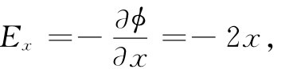
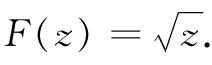
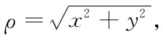
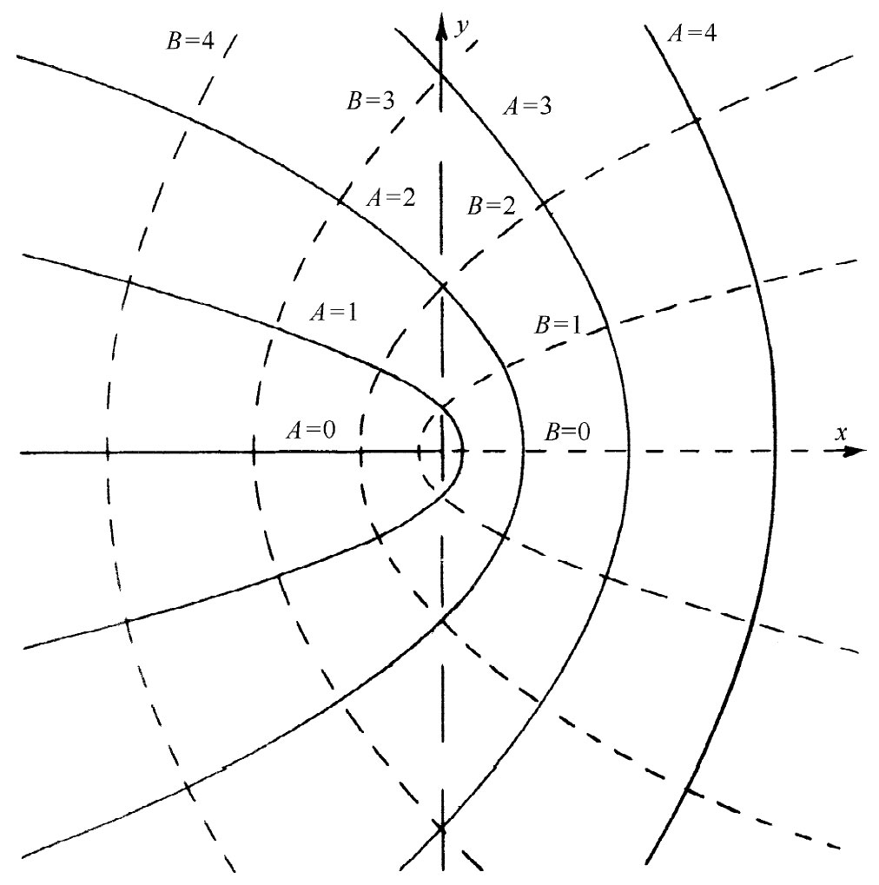
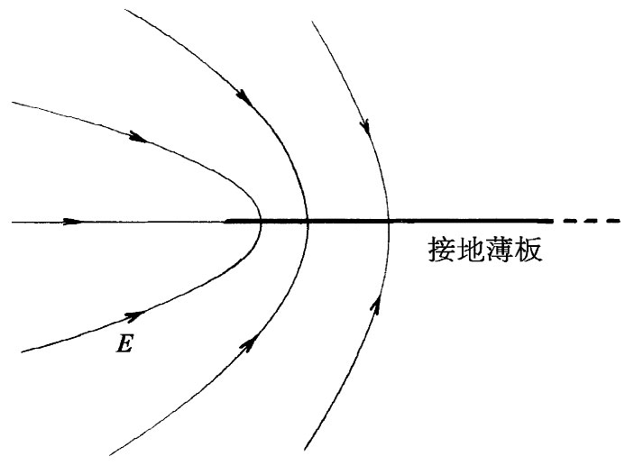

复变数z被定义为
z=x+iy.
（切莫把这里的z与z坐标混淆，在下面的讨论中我们将不涉及z坐标，因为已假定场与z没有依存关系了。）于是以x和y表示的每一点就对应于一个复数z，可以把z当成一个单独的（复）变数，并用它来写出通常类型的数学函数F（z）。例如，
F（z）=z2 ，
或 F（z）=1/z3 ，
或 F（z）=zlogz，
等等。
给出任意特定函数F（z），便可以代入z=x+iy，这就可得到一个x和y的函数——包括实的和虚的两部分。例如
z2 =（x+iy）2 =x2 -y2 +2ixy. （7.3）
任意函数F（z）都可以写成纯粹实部与纯粹虚部之和，而每一部分都是x和y的函数
F（z）=U（x，y）+iV（x，y）， （7.4）
式中U（x，y）和V（x，y）都是实函数。于是，从任意复变函数F（z）可以导出两个新的函数U（x，y）和V（x，y）。例如，F（z）=z2 给出的两个函数为
U（x，y）=x2 -y2 ， （7.5）
和
V（x，y）=2xy. （7.6）
现在我们来谈一个不可思议的数学定理，它是那么令人喜悦，所以我们将把它的证明留给你们数学中一门课程去做（不应将所有的数学奥妙都透露出来，否则题材就未免太枯燥无味了）。这个定理是：对于任一“普通复变函数”（数学家将把它定义得更好些），上述U和V两函数会自动地 满足下列关系：
由此可立即推出，每一个U和V函数都各满足拉普拉斯方程：
这两方程对于式（7.5）和（7.6）那种函数显然是正确的。
这样，从任意普通的函数出发，我们便能得到两个函数U（x，y）和V（x，y），它们都是二维的拉普拉斯方程之解，并各代表一种可能的静电势。我们可以捡起任意 函数F（z），它就代表某个 电场问题——事实上是两个 ，因为U和V每个 都代表一个解。我们可以随心所欲地写出尽可能多的解答——只要编造出各种函数——然后又只要找出与每一解答相符合的问题 。这听起来似乎有点本末倒置，但毕竟是一种可能方法。
作为一个例子，让我们看一看函数F（z）=z2 会提供什么样的物理内容。从这一函数我们获得了两个势函数式（7.5）和（7.6）。要看出函数U属于哪一种问题，可令U=A，即一常数，而解出一组等势面来：
x2 -y2 =A.
这是一个直角双曲线方程。对各种不同A值，我们会得到如图7-1所示的那些双曲线。当A=0时，所得到的是通过原点的两条交叉直线的特殊情况。
图7-1 两组正交曲线，它们各可代表一个二维静电场中的等势面
像这样的一组等势面相当于几种可能的物理情况。首先，它代表两个相等点电荷间其中点附近场的详细情况。其次，它代表导体内一个直角角隅内的场。如果我们有两个形状做得像图7-2所示的、各保持不同电势的电极，那么标明为C的那个角附近的场看来就像图7-1所示的原点处那种场。图中实线组是等势面，而与之成直角的虚线组则相当于E线。在尖端或突出部分处电场趋向增强，而在凹陷处或坑谷里的场则会趋向减弱 。
图7-2 在C点附近的场与在图7-1所示的相同
我们所找到的解也相当于一个双曲线形电极放在一个直角角隅附近或两个各具有适当电势的双曲线形电极的解。图7-1所示的场具有重要的性质。电场的x分量Ex 为

即电场与离轴的距离成正比。利用这一事实，可制成一种（称为四极透镜的）装置，它对于使粒子束聚焦很有用（参阅§29-7），所需的场往往通过使用四个如图7-3所示的那种双曲线形电极而获得。对于图7-3中的电场线，我们只要把照图7-1中那一组代表V=常数的虚线复制下来。我们有一意外收获！由于式（7.7）和（7.8），所以V=常数的那些曲线会与U=常数的那些曲线正交。每当我们选取一个函数F（z）时，就从U和V分别得到等势面和场线。我们已解决了两问题中的任一个，到底是哪一个，则取决于哪一组曲线将被称为等势面。
图7-3 在一个四极透镜中的电场
作为第二个例子，考虑函数
 （7.11）
若我们写出 z=x+iy=ρeiθ ，
其中 
而 tanθ=y/x，
利用来自式（7.12）的U和V，对于U（x，y）=A和V（x，y）=B的两组曲线被画在图7-4上。另一方面，有许多可能情况也可用这些场来描述，其中最有趣的一种是靠近一张薄板边缘的场。如果B=0的线——在y轴右侧的那条线——代表一块带电薄板，那么在它附近的场线就是由A等于各种不同值的一组曲线给出的。物理情况如图7-5所示。
|  |  |
| 图7-4 由式（7.12）中U（x，y）和V（x，y）等于常数的两组曲线 | 图7-5 在一块接地薄板的边缘附近的场 |
其他的例子还有：
F（z）=z2/3 ， （7.13）
这给出一个直角角隅外 面的场；
F（z）=logz， （7.14）
给出一根线电荷的场；
而 F（z）=1/z， （7.15）
则会给出电偶极子的二维模拟物的场，也就是两条互相靠近而带有异号电荷的平行线的场。
本课程中对上述课题将不再追寻下去，但仍必须强调，虽然复变函数技巧常常很有效，但它局限于二维问题，而且还是一种间接方法。